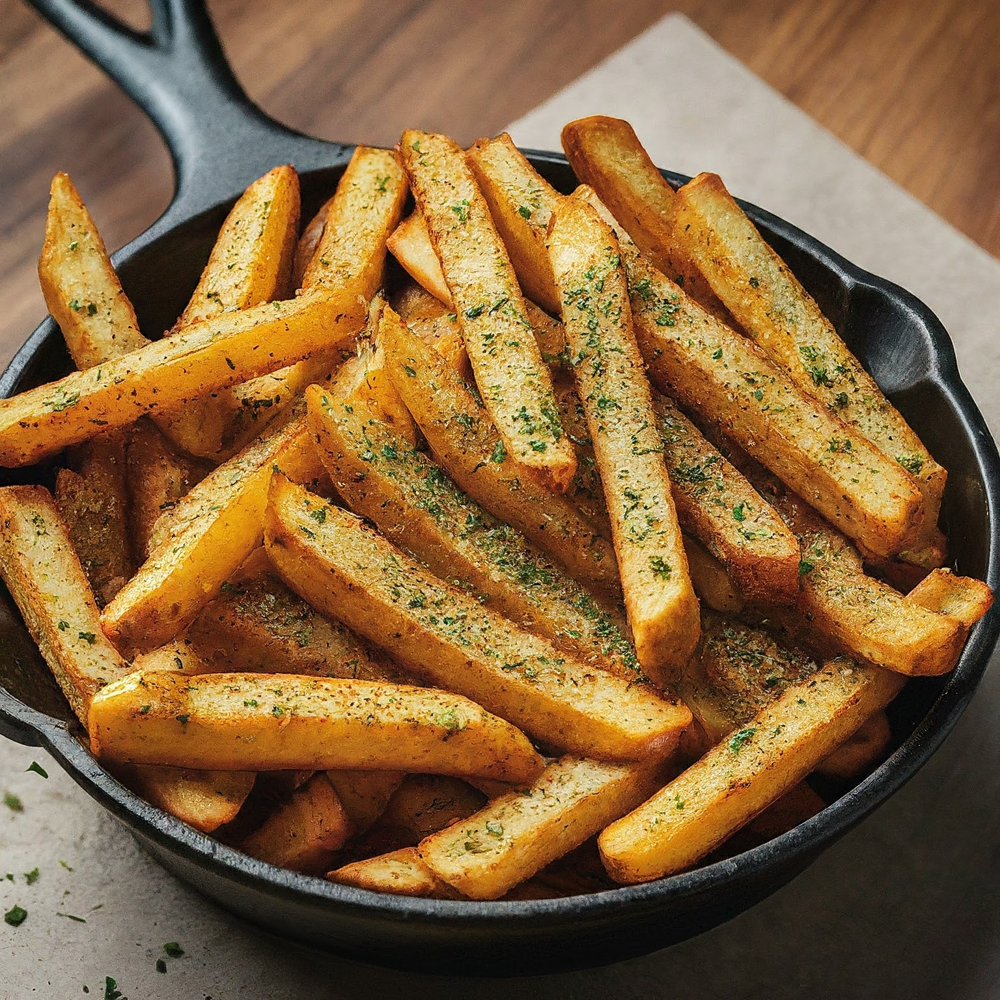
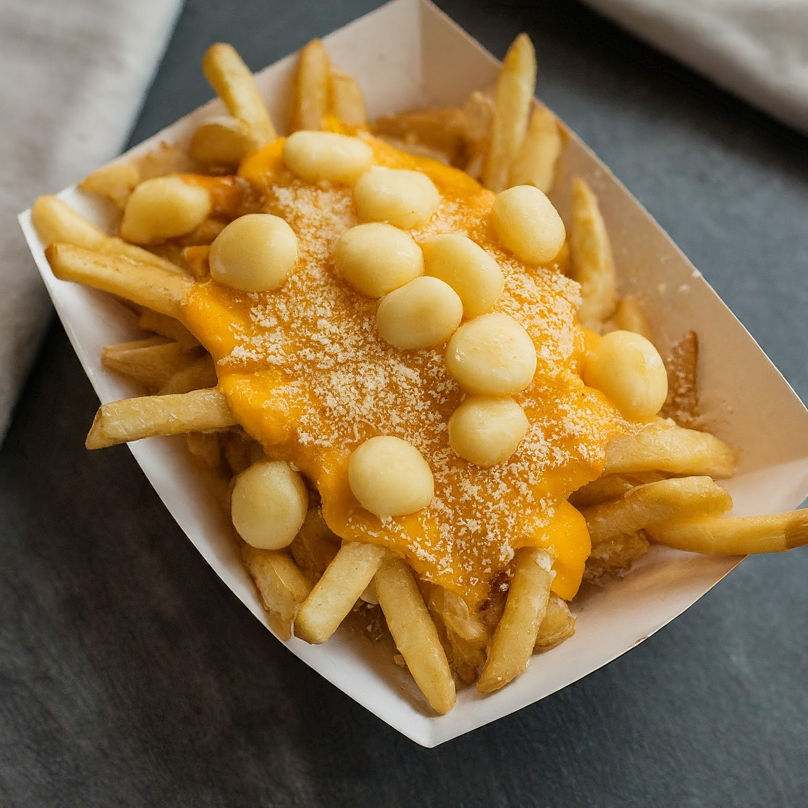
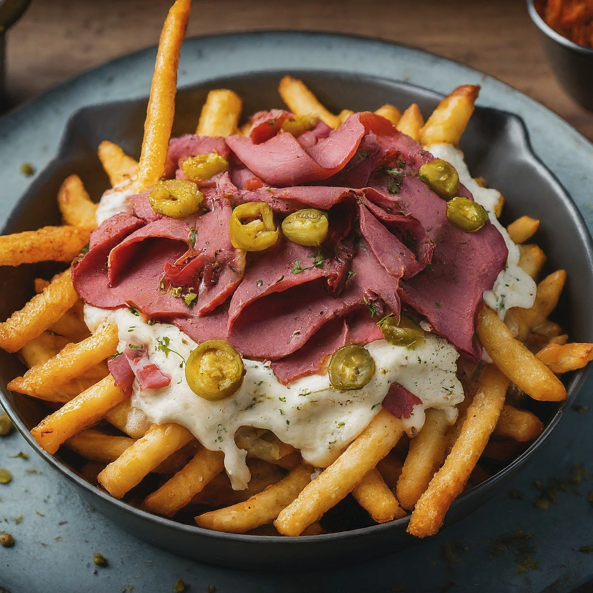
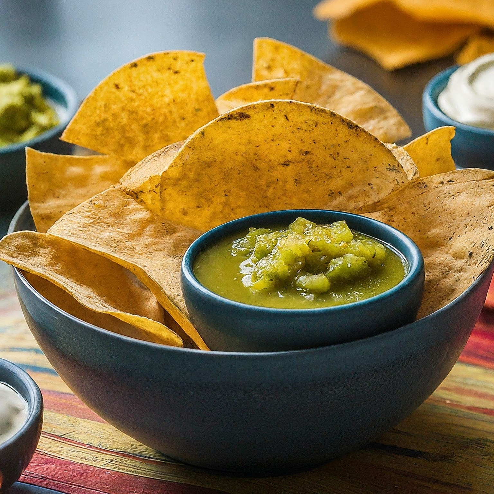
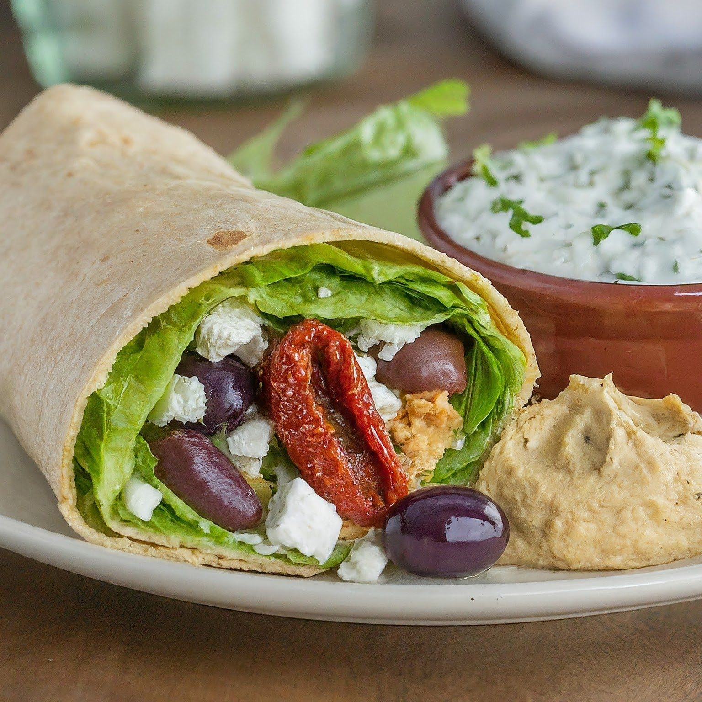
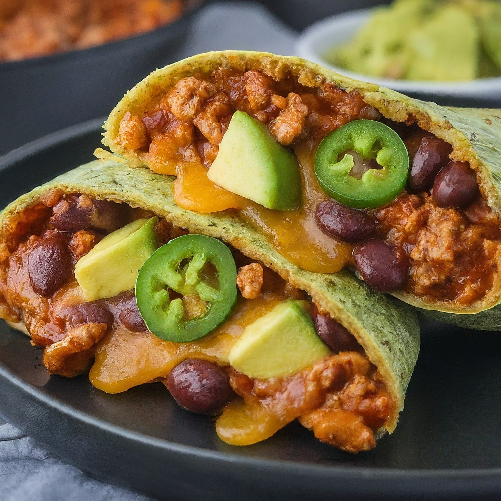
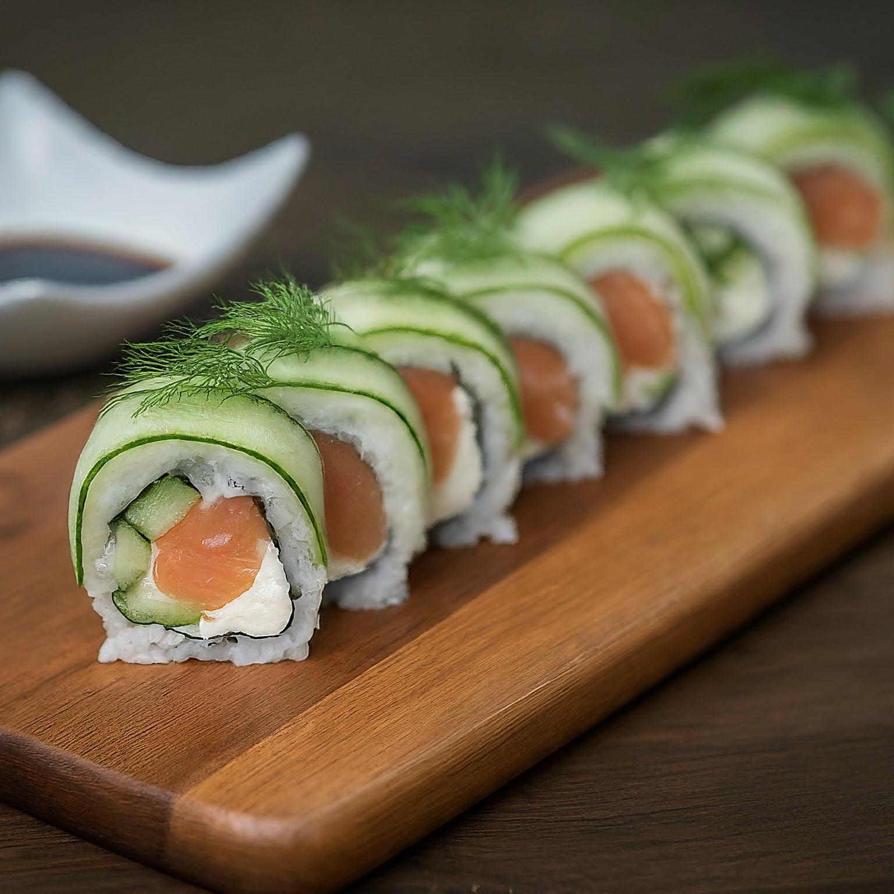
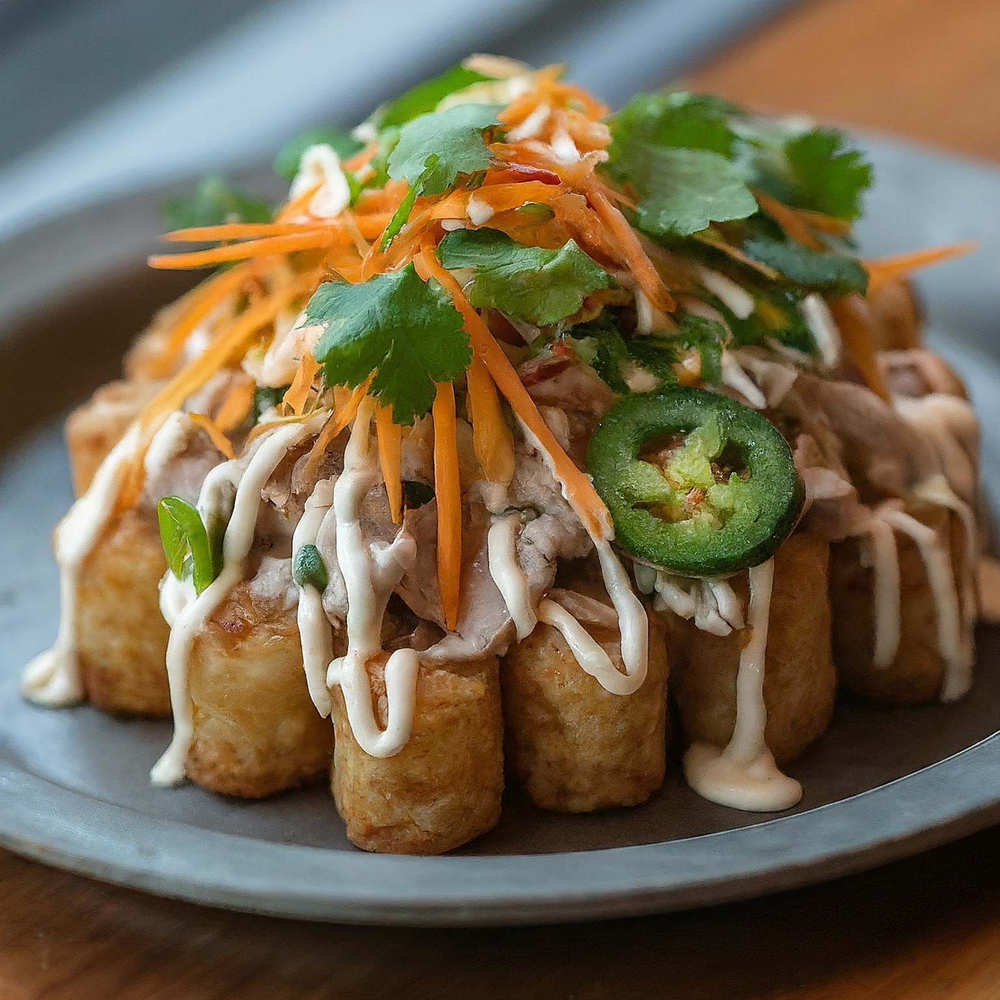
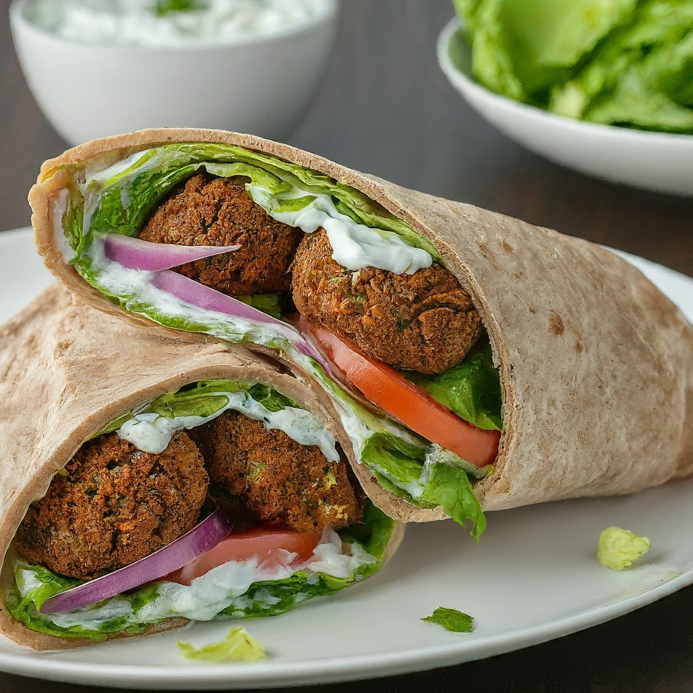

Wraps
- Note:
All wraps, except Stack Overflow are served on your choice of flour or corn tortilla.
Sides
Bug-Free Fries
Just a side of fries
Three-Layer Cheese Fries
Fries topped with cheddar cheese, parmesean, and cheese curds.
Golden Ratio Fries
Fries topped with havarti and dill cheese, pastrami, Russian dressing, pickled onions and peppers, pickled jalapeno
Compile Chips
Tortilla chips and salsa verde

Function Fries
Buffalo chicken, romaine lettuce, tomatoes, carrots, ranch, blue cheese

Loop Wrap
Vegetarian. Hummus, romaine lettuce, sun-dried tomatoes, Kalamata olives, feta cheese, tzatziki sauce
Stack Overflow
Jalapeno tortilla, turkey chili, onions, cheddar cheese, avocado
Recursive Roll
Smoked salmon, cream cheese, cucumber, dill, and baby spinach
Binary Bites
Marinated pork, pickled carrots, cucumber, cilantro, mint, fresno chiles, mayonnaise

Git Wrap
Vegetarian. Falafel, red onion, romaine lettuce, tomato, and tzatziki sauce
